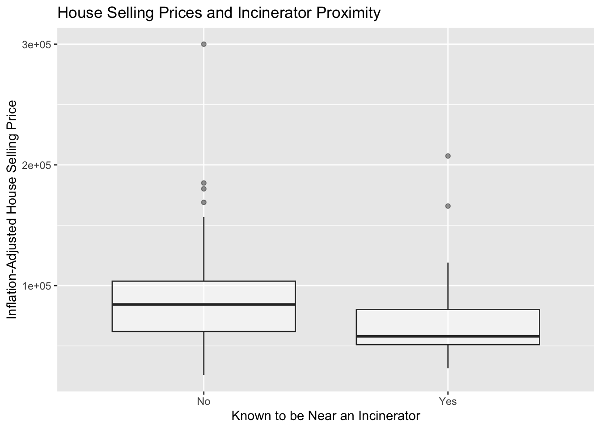

library(here)
library(tidyverse)
library(stargazer)
library(estimatr)
library(dplyr)
library(plm)
library(lmtest)
library(car)
library(sandwich)
library(formatR)How Can We Differentiate Between Correlation vs Causation?
Correlation can easily be confused with causation. Sometimes it’s not so obvious whether X causes Y, or if X and Y are just correlated and simply tied together by a different actor, Z.
For example: it’s plausable that people often get ice cream on days that they also end up getting sunburned. Would this mean that ice cream causes skin to burn? We know logically that people may get ice cream more on warm sunny days, and it’s these warm sunny days that cause the sunburns, not the ice cream. However, other problems are more nuanced an complex, and the answer may not be so obvious. How do we discern causation from correlation, then?
The TLDR: we can use mathematics! Here, I use difference-in-differences analysis to determine whether or not proximity to an incinerator (a proxy for increased air pollution) causes a decrease in housing value. A key assumption we need validated in order to perform this analysis is called the parallel trends assumption.
For this assumption to hold water, we need to be fairly certain that if we had withheld treatment (i.e. if a nearby incinerator were never installed) the price of houses in the ‘treated’ group (i.e. houses that actually did end up nearby an incinerator) would have followed the same pricing trend as the ‘control’ group (i.e. houses that did end up far away from an incinerator). By controlling for other time invariant variables such as number of rooms, house size, and other attributes, I consider this assumption and analyses valid.
The Code
Load Libraries
Read in the Data
file_path <- here("posts","correlation-vs-causation","data", "KM_EDS241.csv")
raw_dat <- read_csv(file_path) |> glimpse()Rows: 321
Columns: 7
$ year <dbl> 1978, 1978, 1978, 1978, 1978, 1978, 1978, 1978, 1978, 1978, 19…
$ age <dbl> 48, 83, 58, 11, 48, 78, 22, 78, 42, 41, 78, 38, 18, 32, 18, 58…
$ rooms <dbl> 7, 6, 6, 5, 5, 6, 6, 6, 8, 5, 6, 5, 6, 6, 6, 7, 6, 5, 4, 5, 4,…
$ area <dbl> 1660, 2612, 1144, 1136, 1868, 1780, 1700, 1556, 1642, 1443, 14…
$ land <dbl> 4578, 8370, 5000, 10000, 10000, 9500, 10878, 3870, 7000, 7950,…
$ nearinc <dbl> 1, 1, 1, 1, 1, 1, 1, 1, 1, 1, 1, 1, 1, 0, 0, 1, 1, 1, 1, 1, 1,…
$ rprice <dbl> 60000, 40000, 34000, 63900, 44000, 46000, 56000, 38500, 60500,…clean_dat <- raw_dat |>
mutate(nearinc = as.factor(nearinc)) |>
mutate(known_nearinc = ifelse(nearinc==1 & year==1981,1,0)) |> # since in 1978, the incinerator location wasn't well known
mutate(known_nearinc = as.factor(known_nearinc))A Quick Data Exploration
Looking at the housing data plotted into boxplot distributions, below, we see that houses known to be sited near an incinerator (dots on the right hand side) appear to have lower housing prices on average than those houses not known to be sited near an incinerator (dots on the left hand side). Is this because the incinerator location is correlated with lower housing values? (Perhaps the incinerator is sited on less expensive land, with less expensive homes.) Or, is this because close incinerator proximity causes lower housing values? (Perhaps because people do not want to buy homes in areas with worse air quality.)
ggplot(data = clean_dat, mapping = aes(x = known_nearinc, y = rprice)) +
geom_boxplot(alpha = 0.5) +
xlab("Known to be Near an Incinerator") +
ylab("Inflation-Adjusted House Selling Price") +
ggtitle("House Selling Prices and Incinerator Proximity") +
scale_x_discrete(labels = c("No", "Yes"))
Finding Causation: Linear Regression with Difference In Differences Analysis
To help tease this out, we can use futher analysis that assumes that housing values would change at the same rate over time (from 1978 to 1981) if no incinerators ended up being built (this is called the parallel trends assumption) and look at the difference in differences between the effect of time on the ‘treated’ (houses with incinerators nearby) housing values vs the effect of time on the treated if the treated were assumed to have the same rate of change in housing values as the control (houses without incinerators nearby). This approach also effectively controls for any time-invariant omitted variables (like if something else like a policy change influencing housing prices across the board). We also control for other time variant variables that we have in our dataset that would otherwise create bias.
The known_nearinc variable effectively creates an indicator of 1 for the houses in 1981 with incinerators known to be nearby (our treatment group) and our control group is any other house (since, in 1978, it was not common knowledge that houses would be near an incinerator). And since we are controlling for the incinerator (with the nearinc variable), according to the parallel trends assumption, the treatment group and control group should have the same slope if there is no incinerator housing price effect. In other words, the coefficient on the known_nearinc should not be statistically significantly different from 0 (as a non-zero value would create different slopes).
Test the hypothesis that the coefficients on the house and lot characteristics are all jointly equal to 0.
# linear regression also controlling for house and lot characteristics in addition to year using heteroskedastic robust SE
lm_mod_all <- lm(formula = rprice ~ known_nearinc + nearinc + as.factor(year) + age + rooms + area + land, data = clean_dat)
se_lmmod_all <- starprep(lm_mod_all, stat = c("std.error"), se_type = "HC2", alpha = 0.05)
stargazer(lm_mod_all, se = se_lmmod_all, type="text")
===============================================
Dependent variable:
---------------------------
rprice
-----------------------------------------------
known_nearinc1 -13,320.150**
(6,785.662)
nearinc1 3,514.141
(7,149.521)
as.factor(year)1981 13,093.930***
(2,795.311)
age -266.338***
(50.716)
rooms 6,969.002***
(1,542.265)
area 23.782***
(3.901)
land 0.127
(0.137)
Constant -17,688.850
(11,070.580)
-----------------------------------------------
Observations 321
R2 0.612
Adjusted R2 0.603
Residual Std. Error 20,857.870 (df = 313)
F Statistic 70.541*** (df = 7; 313)
===============================================
Note: *p<0.1; **p<0.05; ***p<0.01# isolating the coefficient on the near an incinerator indicator
nearinc_coef_cntrlall <- as.numeric(lm_mod_all$coefficients[2])
# f-test to test the hypothesis that the coefficients for all of these additional variables are statistically significantly different from 0
F_test <- linearHypothesis(lm_mod_all, c("age = 0", "rooms = 0", "area = 0", "land = 0"),
vcov = vcovHC(lm_mod_all, type = "HC2"))
F_testLinear hypothesis test
Hypothesis:
age = 0
rooms = 0
area = 0
land = 0
Model 1: restricted model
Model 2: rprice ~ known_nearinc + nearinc + as.factor(year) + age + rooms +
area + land
Note: Coefficient covariance matrix supplied.
Res.Df Df F Pr(>F)
1 317
2 313 4 34.512 < 2.2e-16 ***
---
Signif. codes: 0 '***' 0.001 '**' 0.01 '*' 0.05 '.' 0.1 ' ' 1As seen above as an output of the regression, when we also control for house and lot characteristics, we can see that the causal effect from close proximity to an incinerator on inflation-adjusted housing selling price is much smaller (“, round(nearinc_coef_cntrlall, 2),”) and is no longer statistically significant. This means that the previous models were biased due to omitted variables that were correlated with the other covariates and also the inflation-adjusted housing selling price. We now see that many other house and lot characteristics have a statistically significant causal effect on inflation-adjusted house selling value and since those variables were correlated with houses being near an incinerator, these relationships were previously ‘hidden’ in the incinerator term. The F-test results, as shown above, adjusted for heteroskedastic error also show us that all of the housing and lot characteristics have causal effects statistically significant from 0, with a p value > 0.0005
Final Thoughts on incinerator construction in North Andover.
The key assumption underlying the causal interpretation of the DD estimator is the parallel trends assumption. In other words, we assume that the effect of time (1981 vs 1978) on inflation-adjusted house selling values should be the same in the treatment (near incinerators) and control (not near incinerators) if there were no incinerators at play here. In other words, there is no omitted variables bias for time variant variables. We found this to be untrue since there were clearly household attributes (as seen above) that we omitted that led to bias.
Citation
BibTeX citation:
@online{cutler2023,
author = {Victoria Cutler},
editor = {},
title = {Correlation Vs {Causation:} {Air} {Quality} and {Housing}
{Prices}},
date = {2023-07-27},
url = {https://victoriacutler.github.io/posts/correlation-vs-causation/},
langid = {en}
}
For attribution, please cite this work as:
Victoria Cutler. 2023. “Correlation Vs Causation: Air Quality and
Housing Prices.” July 27, 2023. https://victoriacutler.github.io/posts/correlation-vs-causation/.